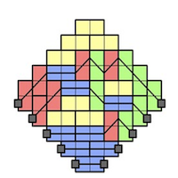

Workshop Quantum Optimal Transport
and Applications (QOTTA) 2024
The theory of Optimal Transportation (OT) has provided a versatile mathematical tool for
addressing a diverse range of problems across various fields, including economics, computer
science, statistics and machine learning. In recent years, OT has been extended to noncommutative
state spaces, opening up new possibilities for its application in advanced
areas of Quantum Physics and Quantum Chemistry. However, these non-commutative OTs currently lack a unified
perspective, and numerous challenges remain unsolved, both theoretical and practical.
The Workshop Quantum Optimal Transport: Theory and Applications (QOTTA) aims to bring together leading experts from different areas of mathematics, ranging from analysis, probability theory and statistics, numerical analysis and
mathematical physics, to collaborate and develop innovative strategies and tools to tackle these challenges.
Participation of PhD students and Postdoc are highly encouraged. Interested participants must registering by the following form.
We are looking forward to seeing you in Cortona (Italy) in September 2024.
The organizing committee (Dario Trevisan, Augusto Gerolin, Kasia Pernal and Alessandro Rudi)
Contact: qotta2024'at'gmail'dot'com
Registration
The registration is free but mandatory. Every interested participant must apply by completing the following application form (deadline July 1st for registration without funding).
Young researchers (e.g., PhD students and Postdocs) are warmly encourage to apply. Finantial support are available for some young participants to cover Hotel accomodation (shared room) and meals. The application for finantial support starts on November 15th 2023 and ends in April 1st 2024. The application package must include a CV and short paragraph on the motivation to participate at the workshop.
Due to space restrictions, the organizers will send an e-mail confirming participation no later than May 2024.
Finally, we recognize that despite the diversity of scientific communities and geographic provenance of the researchers that are part of this program, more needs to be done. The QOTTA Workshop will thus enthusiastically encourages participation from every possible direction in this respect, most notably from groups that are not yet well represented in STEM areas.
For more information and general inquires please write to qotta2024'at'gmail'dot'com
Scientific Program
QOTTA will take place at the Palazzone della Scuola Normale in Cortona (Italy) from September 1st to September 6th 2024. The workshop starts at Monday at 9 am and ends Friday at 2 pm.
The scientific program includes three mini-courses and talks by the following speakers.
The schedule and the full scientific program is available here.
Mini-Courses
-

Quantum Optimal Transport between quantum channels
Giacomo De Palma
(University of Bologna, Italy) -

Determinantal Point Processes and Random Matrices in a nutshell
Manuela Girotti
(Emory University, USA)Abstract
-

Many-body quantum dynamics
Simone Rademacher
(LMU Munich, Germany)
Invited Speakers and Participants
Damiano Aliverti (LMU, Germany)
Paul Ayers (McMaster University, Canada)
Andrea Basteri (Paris-Saclay University, France)
Niels Benedikter (Università degli Studi di Milano, Italy)
Zak Brannan (Ottawa, Canada)
Chiara Boccato (Università di Pisa, Italy)
Paola Boito (Università di Pisa, Italy)
Gergely Bunth (Alfréd Rényi Institute, Hungary)
Emanuele Caglioti (Sapienza Università di Roma, Italy)
Emanuele Caputo (Warwick University, UK)
Angela Capel (Universität Tübingen, Germany)
Alice Cortinovis (Stanford University, USA)
Tommaso Cortopassi (Scuola Normale Superiore di Pisa, Italy)
Stijn De Baerdemacker (University of New Brunswick, Canada)
Luca Esposito (Università di Salerno, Italy)
Anna Kausamo (Università di Firenze, Italy)
Julia Liebert (LMU, Germany)
Zhiyi Lin (Ottawa, Canada)
Nataliia Monina (Ottawa, Canada)
Francesca Pieroni (Sapienza Università di Roma, Italy)
Pavlo Pelikh (Ottawa, Canada)
Lorenzo Portinale (HCM, Germany)
Damiano Poletti (Università di Genova, Italy)
Jósef Pitrik (Budapest University of Technology, Hungary)
Farnaz-Heidar Zadeh (Queen's University, Canada)
Emanuela Sasso (Università di Genova, Italy)
Tamás Titkos (Corvinus University & Renyi Institute, Hungary)
Luca Tamanini (Università Cattolica del Sacro Cuore, Italy)
Daniel Virosztek (Alfréd Rényi Institute, Hungary)
Melchior Wirth (Insitute of Science and Technology, Austria)
Location and contact
|
The meeting will take place in the Palazzone di Cortona in Cortona, Italy. For questions: qotta2024'at'gmail'dot'com |
HOW TO GET TO CORTONA:
There are several possibilities to get to Cortona:
- Arriving by car: If you arrive by car, take the Valdichiana exit from the A1 highway (Autostrada del Sole), then take the E45 freeway towards Perugia. Take the second exit for Cortona (Cortona San Lorenzo) and follow the signs to SS71 road in Camucia and then to Cortona.
- Fly to Florence: Then take a train from Florence to Camucia-Cortona (approximately 1.30h).
- Fly to Perugia: Then take a train from Perugia to Camucia-Cortona (approximately 45min).
- Fly to Rome: Then take a train from Rome to Camucia-Cortona (approximately 2h).
From the train station Camucia-Cortona, you will need to take a taxi to Palazzone. The website of the railway in Italy is www.trenitalia.com.
Please note: On Sundays, it could be difficult to find a taxi at the station. It is advisable to book one in advance by phone.
A list of taxi numbers can be found here:
- ADREANI Enzo: +39 335 8196313
- BELLERI Enzo: +39 335 335394
- CALERI Albino: +39 368 7386544 // +39 338 7043596
- NAKA Ylli: +39 328 5443970
- OLIVI Francesco: +39 391 4239606 // +39 335 1256420
- PRVULOVIC Dejan/Miki: +39 348 4023501 // +39 338 9317508
- SALIJEVIC Saban: +39 338 2877210
- SEMBOLINI Gian Enrico: +39 338 5331155
- VINCARELLI Enzo: +39 335 6050186
- VALVARITO Vito: +39 339 3774976
- RIDONI Federico: +39 376 2361864